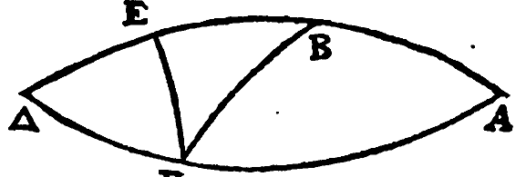

Prop. XI. Theor. — De Excessu Trium Angulorum (Halley 1758, p. 11)¶
Menelai Alexandrini Sphaericorum Lib. I Prop. XI (Halley 1758, p. 11)


Enuntiatio (Halley 1758, p. 11)
In omni triangulo Sphaerico, producto uno latere, angulus exterior minor erit utrisque interioribus eidem oppositis simul sumptis: & tres anguli trianguli simul sumpti majores erunt duobus rectis.
[§1.4 · Demonstratio, p. 11] Sit ΑΒΓ triangulum Sphaericum: dico quod angulus exterior, arcubus ΒΓ, ΓΔ contentus, minor est angulis Α, Β eidem oppositis: quodque tres anguli trianguli Α, Β, Γ simul sumpti excedunt duos angulos rectos.
Fiat ad punctum Γ super arcum ΓΔ angulus ΔΓΕ aequalis angulo Α, & producatur ΑΒ ad occursum ipsius ΑΓ in puncto Δ. Jam quoniam anguli Δ, Γ sunt aequales, erunt arcus ΔΕ, ΕΓ quoque aequales; & ΒΕ, ΕΓ simul sunt aequales arcui ΒΔ, ac proinde minores sunt semicirculo: quare (per praeced.) angulus exterior ΓΒΑ major est interiore ΒΓΕ, atque adeo angulus ΒΓΔ exterior trianguli ΑΒΓ, minor est angulis ΓΒΑ, ΒΑΓ simul sumptis.
Adjiciatur communis angulus ΒΓΑ; & duo anguli ΒΓΔ, ΒΓΑ minores erunt angulis Α, Β, Γ. Sed duo anguli ΒΓΔ, ΒΓΑ sunt aequales duobus rectis: quare tres anguli Α, Β, Γ simul sumpti excedunt duos rectos. Q. E. D.